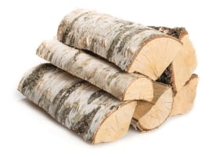

Березовые дроваот 1500 ₽/м3
По своим характеристикам чурбаки из березы стоят на втором месте после дуба. Они идеально подходят для отопления жилых помещений, а также для каминов и бани. Полученное тепло сохраняется на протяжении долгого времени. Предлагаем выбрать качественное и недорогое топливо с высокой теплотворной способностью, обеспечивающее создание мягкой, приятной атмосферы, а также дающее приятный аромат. Вы сможете купить дрова березовые с доставкой по цене, лежащей в доступных пределах, прямо на сайте.
-
Просто разжигаются

Долго горят
-
Быстро разгораются
-
Не стреляют